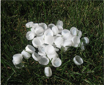

ECO-FRIENDLY
Origins of Dr. Doormat
Yarn Made from Recycled Bottle Caps
By choosing a yarn made out of 95% recycled plastic bottle caps and 5% non-toxic resins and pigments, we were making a conscious choice to minimize waste on our planet.
Many savvy recyclers know that you should never leave the bottle caps on the water bottles when you recycle. The polymers used to make the caps are different than those used in the bottles and need to be separated to prevent contamination. Also, caps have been known to jam machines at the recycle center and have proven to be a danger to workers when bottles have exploded from pressure. We are delighted to find a great way to reuse the bottle caps.
Non-Toxic Antimicrobial Treatment
When we chose our specially formulated antimicrobial chemistry, we carefully selected one that would not poison microorganisms but would destroy them with a physical mode of action so as not to create “super bugs.” The antimicrobial protection is non-leaching and biodegradable.
The antimicrobial formula can’t penetrate the skin and remains safe for all family members including babies and pets.
Backing made from 100% Virgin Rubber
While using recycled rubber sounds like a good idea, it could in fact pose a threat to your home and health. We chose virgin rubber because we wanted to be sure the oils in the rubber are pure and in no way toxic. In every step of manufacturing Dr. Doormat, we had to make decisions and remember our original goal – to solve a problem without creating a bigger problem. When choosing rubber, we want to be sure the oils in the rubber are pure and in no way toxic. Naturally virgin rubber was the best selection. Imagine a rusty old barge sitting in a harbor overseas half full of oil. The owner wants to offload that oil and sell it cheap to a broker. The broker then sells it to a manufacturer who purchases it for cheap because they are trying to assemble a product and keep costs down.
The oil can be used in bargain priced doormats and other household products that end up in your kitchen or entryway. Did you ever lift up a mat and the floor yellowed? The oils from the mat could be leaching into your home environment.
The bottom of Dr. Doormat is 100% virgin rubber. However, no rubber trees are cut down to make Dr. Doormat. Instead, the rubber is sapped from trees in the tropical forests of the Kerala Spice lands of India, on the coast of the Arabian Sea. The bark of the tree is “tapped” and the white milky sap collected in cups to begin the process.To view a video of the entire process, click here.
While keeping costs down may be important, we are not willing to make concessions on the quality of the ingredients going into the product... and ultimately into your home